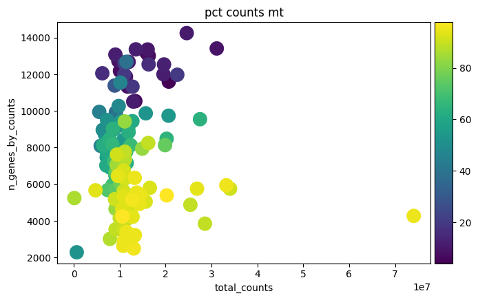
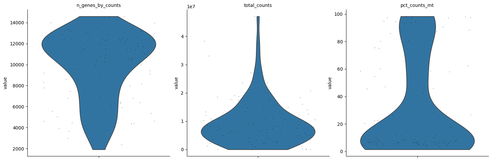
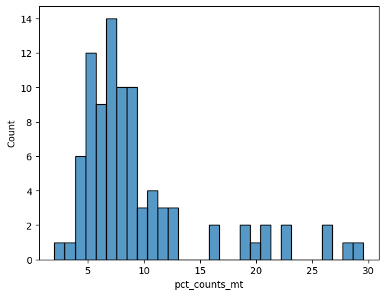

%matplotlib inline
%load_ext autoreload
%autoreload 2
import scvi
import scanpy as sc
import pandas as pd
import numpy as np
import seaborn as sns
import matplotlib.pyplot as plt
import anndata as ad08 - Niakan human
1 Load in libraries
import sys; sys.path.append("../scripts/")
from helpers import normalize_smartseq
GENE_LEN = '/home/gkb340/Brickman/shared/references/homo_sapiens/ensembl/GRCh38_110/Homo_sapiens.GRCh38.110.gene_length.tsv'
REMAKE_FIGURES = False2 Load in data
2.1 Initial sequencing from the Crick
crick_adata = sc.read_h5ad("../data/external/niakan_et_al/niakan_combined_matrix.h5ad")NameError: name 'sc' is not definedcrick_adata.obs['sample_fine'] = crick_adata.obs['sample'].str.split('_', expand=True)[0].to_list()
Simon_metadata = pd.read_table("../data/processed/Samples_LIMSID.csv" ,sep = ',')
crick_adata.obs = crick_adata.obs.join(Simon_metadata[['LIMS.ID','Embryo']].set_index('LIMS.ID'), on='sample_fine')crick_adata.obs_names = crick_adata.obs['Embryo'] + '_' + crick_adata.obs['sample']
crick_adata.obs['treatment'] = 'DMSO'
crick_adata.obs.loc[crick_adata.obs_names.str.contains('Ulix'), 'treatment'] = 'Ulix'
crick_adata.obs['batch'] = "NIAKAN_1"
crick_adata.obs['experiment'] = "Simon et al, 2024"
crick_adata.obs['technology'] = "SMART-seq2"
crick_adataAnnData object with n_obs × n_vars = 132 × 62754
obs: 'sample', 'fastq_1', 'fastq_2', 'sample_fine', 'Embryo', 'treatment', 'batch', 'experiment', 'technology'
var: 'gene_symbol'crick_adata.var["mt"] = crick_adata.var.gene_symbol.str.startswith("MT-")
sc.pp.calculate_qc_metrics(crick_adata, qc_vars=["mt"], inplace=True, log1p=True)
sc.pl.violin(crick_adata, ["n_genes_by_counts", "total_counts", "pct_counts_mt"], jitter=0.4, multi_panel=True)
sc.pl.scatter(crick_adata, "total_counts", "n_genes_by_counts", color="pct_counts_mt")
sns.histplot(x=crick_adata.obs['pct_counts_mt'], bins=30)
<Axes: xlabel='pct_counts_mt', ylabel='Count'>crick_adata = crick_adata[crick_adata.obs.pct_counts_mt < 30].copy()
crick_adata = crick_adata[crick_adata.obs.n_genes_by_counts > 8000].copy()sc.pl.violin(crick_adata, ["n_genes_by_counts", "total_counts", "pct_counts_mt"], jitter=0.4, multi_panel=True)
sc.pl.scatter(crick_adata, "total_counts", "n_genes_by_counts", color="pct_counts_mt")
sns.histplot(x=crick_adata.obs['pct_counts_mt'], bins=30)<Axes: xlabel='pct_counts_mt', ylabel='Count'>2.2 Sequencing from Cambridge
babraham_adata = sc.read_h5ad("../data/assays/SCR_NS_20240521/processed/GRCh38_110/combined_matrix.merged.h5ad")babraham_adata.obs_names = babraham_adata.obs['sample']
babraham_adata.obs['treatment'] = 'DMSO'
babraham_adata.obs.loc[babraham_adata.obs_names.str.contains('Ulix'), 'treatment'] = 'Ulix'
babraham_adata.obs['batch'] = "NIAKAN_2"
babraham_adata.obs['experiment'] = "Simon et al, 2024"
babraham_adata.obs['technology'] = "SMART-seq2"
babraham_adataAnnData object with n_obs × n_vars = 100 × 62754
obs: 'sample', 'fastq_1', 'fastq_2', 'treatment', 'batch', 'experiment', 'technology'
var: 'gene_symbol'babraham_adata.var["mt"] = babraham_adata.var.gene_symbol.str.startswith("MT-")
sc.pp.calculate_qc_metrics(babraham_adata, qc_vars=["mt"], inplace=True, log1p=True)
sc.pl.violin(babraham_adata, ["n_genes_by_counts", "total_counts", "pct_counts_mt"], jitter=0.4, multi_panel=True)
sc.pl.scatter(babraham_adata, "total_counts", "n_genes_by_counts", color="pct_counts_mt")
sns.histplot(x=babraham_adata.obs['pct_counts_mt'], bins=30)
<Axes: xlabel='pct_counts_mt', ylabel='Count'>
babraham_adata = babraham_adata[babraham_adata.obs.pct_counts_mt < 30].copy()
babraham_adata = babraham_adata[babraham_adata.obs.n_genes_by_counts > 8000].copy()sc.pl.violin(babraham_adata, ["n_genes_by_counts", "total_counts", "pct_counts_mt"], jitter=0.4, multi_panel=True)
sc.pl.scatter(babraham_adata, "total_counts", "n_genes_by_counts", color="pct_counts_mt")
sns.histplot(x=babraham_adata.obs['pct_counts_mt'], bins=30)<Axes: xlabel='pct_counts_mt', ylabel='Count'>2.3 Concatenate anndata
adata = ad.concat([crick_adata, babraham_adata])adata.obs| sample | fastq_1 | fastq_2 | treatment | batch | experiment | technology | n_genes_by_counts | log1p_n_genes_by_counts | total_counts | log1p_total_counts | pct_counts_in_top_50_genes | pct_counts_in_top_100_genes | pct_counts_in_top_200_genes | pct_counts_in_top_500_genes | total_counts_mt | log1p_total_counts_mt | pct_counts_mt | |
|---|---|---|---|---|---|---|---|---|---|---|---|---|---|---|---|---|---|---|
| Human_Ulix_5_SIM5110A133 | SIM5110A133 | /scratch/Brickman/pipelines/Niakan2024_human/r... | /scratch/Brickman/pipelines/Niakan2024_human/r... | Ulix | NIAKAN_1 | Simon et al, 2024 | SMART-seq2 | 12540 | 9.436759 | 16318175.0 | 16.607790 | 27.067255 | 33.021707 | 40.767923 | 53.448765 | 2596380.0 | 14.769629 | 15.910971 |
| Human_Ulix_4_SIM5110A88 | SIM5110A88 | /scratch/Brickman/pipelines/Niakan2024_human/r... | /scratch/Brickman/pipelines/Niakan2024_human/r... | Ulix | NIAKAN_1 | Simon et al, 2024 | SMART-seq2 | 13011 | 9.473627 | 16349510.0 | 16.609709 | 23.037987 | 29.586251 | 37.693747 | 51.772891 | 1259369.0 | 14.046123 | 7.702793 |
| Human_Ulix_5_SIM5110A127 | SIM5110A127 | /scratch/Brickman/pipelines/Niakan2024_human/r... | /scratch/Brickman/pipelines/Niakan2024_human/r... | Ulix | NIAKAN_1 | Simon et al, 2024 | SMART-seq2 | 12053 | 9.397152 | 6229982.0 | 15.644884 | 27.717287 | 34.285813 | 42.493606 | 56.090708 | 1005475.0 | 13.820971 | 16.139294 |
| Human_Ulix_4_SIM5110A85 | SIM5110A85 | /scratch/Brickman/pipelines/Niakan2024_human/r... | /scratch/Brickman/pipelines/Niakan2024_human/r... | Ulix | NIAKAN_1 | Simon et al, 2024 | SMART-seq2 | 14246 | 9.564302 | 24619864.0 | 17.019064 | 19.988749 | 25.531935 | 33.104822 | 46.332910 | 2569475.0 | 14.759212 | 10.436593 |
| Human_Ulix_5_SIM5110A142 | SIM5110A142 | /scratch/Brickman/pipelines/Niakan2024_human/r... | /scratch/Brickman/pipelines/Niakan2024_human/r... | Ulix | NIAKAN_1 | Simon et al, 2024 | SMART-seq2 | 10535 | 9.262553 | 13425119.0 | 16.412638 | 23.108585 | 31.311454 | 41.168916 | 56.296395 | 788035.0 | 13.577299 | 5.869855 |
| ... | ... | ... | ... | ... | ... | ... | ... | ... | ... | ... | ... | ... | ... | ... | ... | ... | ... | ... |
| Human_Ulix_7_1 | Human_Ulix_7_1 | /maps/projects/dan1/data/Brickman/assays/SCR_N... | /maps/projects/dan1/data/Brickman/assays/SCR_N... | Ulix | NIAKAN_2 | Simon et al, 2024 | SMART-seq2 | 12338 | 9.420520 | 7991007.0 | 15.893827 | 20.325098 | 26.809174 | 35.067495 | 49.236786 | 538162.0 | 13.195917 | 6.734595 |
| Human_DMSO_6_18 | Human_DMSO_6_18 | /maps/projects/dan1/data/Brickman/assays/SCR_N... | /maps/projects/dan1/data/Brickman/assays/SCR_N... | DMSO | NIAKAN_2 | Simon et al, 2024 | SMART-seq2 | 9591 | 9.168685 | 1832853.0 | 14.421385 | 23.418299 | 29.630854 | 37.395907 | 51.251028 | 220061.0 | 12.301664 | 12.006473 |
| Human_Ulix_6_6 | Human_Ulix_6_6 | /maps/projects/dan1/data/Brickman/assays/SCR_N... | /maps/projects/dan1/data/Brickman/assays/SCR_N... | Ulix | NIAKAN_2 | Simon et al, 2024 | SMART-seq2 | 11746 | 9.371353 | 12517080.0 | 16.342606 | 20.012575 | 26.891527 | 35.473273 | 50.137876 | 913879.0 | 13.725454 | 7.301055 |
| Human_Ulix_6_30 | Human_Ulix_6_30 | /maps/projects/dan1/data/Brickman/assays/SCR_N... | /maps/projects/dan1/data/Brickman/assays/SCR_N... | Ulix | NIAKAN_2 | Simon et al, 2024 | SMART-seq2 | 13966 | 9.544453 | 27490648.0 | 17.129356 | 18.133076 | 24.556694 | 33.008141 | 47.091940 | 1456117.0 | 14.191284 | 5.296772 |
| Human_Ulix_7_8 | Human_Ulix_7_8 | /maps/projects/dan1/data/Brickman/assays/SCR_N... | /maps/projects/dan1/data/Brickman/assays/SCR_N... | Ulix | NIAKAN_2 | Simon et al, 2024 | SMART-seq2 | 12450 | 9.429556 | 47063196.0 | 17.667002 | 20.350137 | 27.642863 | 36.563244 | 51.822529 | 2275928.0 | 14.637898 | 4.835897 |
89 rows × 18 columns
sc.pl.violin(adata, ["n_genes_by_counts", "total_counts", "pct_counts_mt"], jitter=0.4, multi_panel=True)
sc.pl.scatter(adata, "total_counts", "n_genes_by_counts", color="pct_counts_mt")
sns.histplot(x=adata.obs['pct_counts_mt'], bins=30)<Axes: xlabel='pct_counts_mt', ylabel='Count'>
adata = normalize_smartseq(adata, GENE_LEN)
adata.layers["counts"] = adata.X.copy()
sc.pp.normalize_total(adata)
sc.pp.log1p(adata)
adata.raw = adataSMART-SEQ: Normalization
SMART-SEQ: Common genes 62663sc.pp.highly_variable_genes(adata, flavor="seurat_v3", n_top_genes=3_000)/projects/dan1/data/Brickman/conda/envs/scvi-1.1.5/lib/python3.10/site-packages/scanpy/preprocessing/_highly_variable_genes.py:75: UserWarning: `flavor='seurat_v3'` expects raw count data, but non-integers were found.
warnings.warn(sc.tl.pca(adata)sc.pl.pca(adata, color=['treatment', 'batch'])del adata.varm['PCs']adata.write("../results/niakan_08.adata.h5ad")3 Model predictions
lvae = scvi.model.SCANVI.load('/home/gkb340/Brickman/projects/proks-salehin-et-al-v2/results/100_human_integration/scanvi_ns_15/')
scvi.model.SCANVI.prepare_query_anndata(adata, lvae)
lvae_q = scvi.model.SCANVI.load_query_data(adata, lvae)INFO File
/home/gkb340/Brickman/projects/proks-salehin-et-al-v2/results/100_human_integration/scanvi_ns_15/model.pt
already downloaded
INFO Found 100.0% reference vars in query data. /projects/dan1/data/Brickman/conda/envs/scvi-1.1.5/lib/python3.10/site-packages/scvi/model/base/_utils.py:66: FutureWarning: You are using `torch.load` with `weights_only=False` (the current default value), which uses the default pickle module implicitly. It is possible to construct malicious pickle data which will execute arbitrary code during unpickling (See https://github.com/pytorch/pytorch/blob/main/SECURITY.md#untrusted-models for more details). In a future release, the default value for `weights_only` will be flipped to `True`. This limits the functions that could be executed during unpickling. Arbitrary objects will no longer be allowed to be loaded via this mode unless they are explicitly allowlisted by the user via `torch.serialization.add_safe_globals`. We recommend you start setting `weights_only=True` for any use case where you don't have full control of the loaded file. Please open an issue on GitHub for any issues related to this experimental feature.
model = torch.load(model_path, map_location=map_location)
/projects/dan1/data/Brickman/conda/envs/scvi-1.1.5/lib/python3.10/site-packages/scvi/data/_manager.py:215: UserWarning: Missing labels key ct. Filling in with unlabeled category Unknown.
field_registry[_constants._STATE_REGISTRY_KEY] = field.transfer_field(lvae_q.train(max_epochs=20, plan_kwargs=dict(weight_decay=0.0), check_val_every_n_epoch=10, early_stopping=True)INFO Training for 20 epochs.
Epoch 20/20: 100%|██████████| 20/20 [00:01<00:00, 11.64it/s, v_num=1, train_loss_step=5.64e+3, train_loss_epoch=5.64e+3]Epoch 20/20: 100%|██████████| 20/20 [00:01<00:00, 13.04it/s, v_num=1, train_loss_step=5.64e+3, train_loss_epoch=5.64e+3]GPU available: False, used: False
TPU available: False, using: 0 TPU cores
IPU available: False, using: 0 IPUs
HPU available: False, using: 0 HPUs
SLURM auto-requeueing enabled. Setting signal handlers.
/projects/dan1/data/Brickman/conda/envs/scvi-1.1.5/lib/python3.10/site-packages/lightning/pytorch/trainer/connectors/data_connector.py:441: The 'train_dataloader' does not have many workers which may be a bottleneck. Consider increasing the value of the `num_workers` argument` to `num_workers=3` in the `DataLoader` to improve performance.
/projects/dan1/data/Brickman/conda/envs/scvi-1.1.5/lib/python3.10/site-packages/lightning/pytorch/loops/fit_loop.py:293: The number of training batches (1) is smaller than the logging interval Trainer(log_every_n_steps=10). Set a lower value for log_every_n_steps if you want to see logs for the training epoch.
/projects/dan1/data/Brickman/conda/envs/scvi-1.1.5/lib/python3.10/site-packages/lightning/pytorch/trainer/connectors/data_connector.py:441: The 'val_dataloader' does not have many workers which may be a bottleneck. Consider increasing the value of the `num_workers` argument` to `num_workers=3` in the `DataLoader` to improve performance.
`Trainer.fit` stopped: `max_epochs=20` reached.adata.obsm["X_scANVI"] = lvae_q.get_latent_representation()
adata.obs['prediction'] = lvae_q.predict()
adata.obs['entropy'] = 1 - lvae_q.predict(soft=True).max(axis=1)sc.pp.neighbors(adata)
sc.tl.umap(adata)2024-10-21 11:49:29.974023: W tensorflow/compiler/tf2tensorrt/utils/py_utils.cc:38] TF-TRT Warning: Could not find TensorRTsc.pl.umap(adata, color=['prediction', 'treatment','batch'], size = 20)sc.metrics.confusion_matrix('treatment', 'prediction', normalize=False, data=adata.obs)| prediction | Epiblast_6.0 | Epiblast_7.0 | Inner Cell Mass | Late epiblast | Primitive Endoderm | Trophectoderm_6.0 | Trophectoderm_7.0 | Trophectoderm_8.0 | Trophectoderm_9.0 |
|---|---|---|---|---|---|---|---|---|---|
| treatment | |||||||||
| DMSO | 1 | 3 | 1 | 1 | 7 | 3 | 9 | 1 | 10 |
| Ulix | 7 | 9 | 1 | 0 | 4 | 5 | 19 | 1 | 7 |
sc.metrics.confusion_matrix('batch', 'prediction', normalize=False, data=adata.obs)| prediction | Epiblast_6.0 | Epiblast_7.0 | Inner Cell Mass | Late epiblast | Primitive Endoderm | Trophectoderm_6.0 | Trophectoderm_7.0 | Trophectoderm_8.0 | Trophectoderm_9.0 |
|---|---|---|---|---|---|---|---|---|---|
| batch | |||||||||
| NIAKAN_1 | 2 | 3 | 0 | 0 | 0 | 3 | 9 | 0 | 8 |
| NIAKAN_2 | 6 | 9 | 2 | 1 | 11 | 5 | 19 | 2 | 9 |
adata.obs['treatment'].value_counts()Ulix 53
DMSO 36
Name: treatment, dtype: int64adata.write("../results/niakan_08.withPredictions.adata.h5ad")